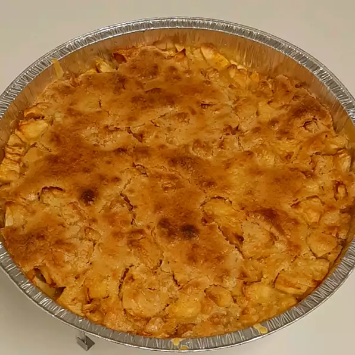

Easy Swedish Apple Pie
<<<

Description:
Apple pie baked with a cinnamon crust.
Ingredient List:
-
1 1/2 pounds Granny Smith Apples - peeled, cored,
and sliced
-
1 tablespoon of sugar
-
1 cup sugar
-
1 cup flour
-
1 teaspoon cinnamon
-
3/4 cup melted butter
-
1 egg
Directions:
-
Preheat oven to 350 degrees F (175 degrees C).
-
Toss apples with 1 tablespoon of sugar, and pour them into a pie plate.
Thoroughly mix together 1 cup of sugar with the flour, cinnamon, butter,
and egg. Spread this evenly over the top of the pie.
-
Bake in preheated oven until the apples have cooked and the topping is
golden brown, about 40 to 45 minutes.
source: https://www.allrecipes.com/recipe/54628/easy-swedish-apple-pie/
<<<